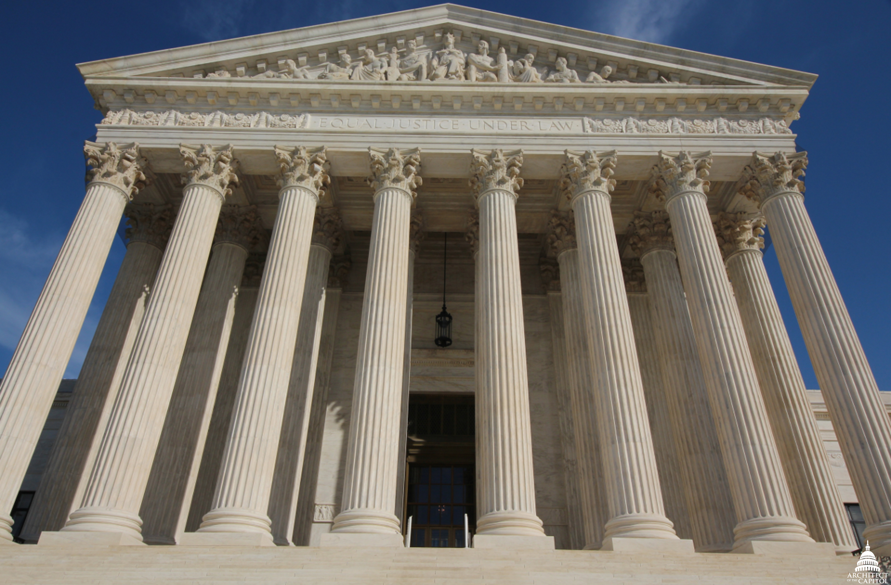

Directions: Read the full text, then answer the questions at the end.
By the 1990s the two parties were pulling apart, and the pulling can be measured. Roll call records show the parties voting as blocs in Congress more often. Counties delivered landslides for one party or the other, and voters who split their tickets between the parties grew scarce. Political polarization names the sorting: Americans arranged into two hostile political camps with fewer voters in the middle. The election of 2000 showed what the sorting could produce. The national count was nearly even, Florida decided the presidency, and Florida's certified margin was 537 votes.
Florida's ballots were still being recounted by hand when the Supreme Court took the case. In Bush v. Gore, decided on December 12, 2000 by five votes to four, the Court held that the recount ordered by Florida's supreme court violated the Equal Protection Clause because ballots were being counted under no uniform standard, and it stopped the recount. George W. Bush carried Florida and the Electoral College, and Albert Gore, who had won the national popular vote, conceded the next day. The Court stated its ruling was limited to the circumstances before it.

The courts became the era's referees. In District of Columbia v. Heller in 2008, the Court held five to four that the Second Amendment protects an individual's right to keep a handgun in the home for self-defense, and it struck down the District's ban. In Citizens United v. Federal Election Commission in 2010, the Court held that the government may not limit independent political spending by corporations and unions. Such spending, made independently of a candidate's campaign, is speech the First Amendment protects, the majority reasoned. The decision opened the way to super PACs and large outside spending in the cycles after.
In 2003 no state licensed marriages between two people of the same sex. Massachusetts became the first in 2004, and other states followed one ruling and one statute at a time. In Obergefell v. Hodges, decided on June 26, 2015 by five votes to four, the Court held that the Fourteenth Amendment requires every state to license marriages between two people of the same sex and to recognize such marriages licensed in other states. Justice Kennedy's opinion closed by stating that the petitioners asked for equal dignity in the eyes of the law and that the Constitution grants them that right. State politics had answered the question fifty ways. A court now answered it once.
Affirmative action, government policies that take race into account in hiring, contracting, and college admissions in order to remedy the effects of past discrimination, had been ordered for federal contractors in the revised Philadelphia Plan of 1969. In Bakke in 1978, Justice Powell's opinion struck down the University of California medical school's set aside of sixteen seats by race and allowed race to remain one factor among others in admissions. The argument ran on those terms for forty five years. On June 29, 2023, in Students for Fair Admissions v. Harvard, the Court held six to three that the programs at Harvard and the University of North Carolina violated the Equal Protection Clause of the Fourteenth Amendment. The majority held that the programs were not measurable enough for a court to review under strict scrutiny, that race used as a plus for some applicants worked as a negative for others, and that the programs had no logical end point.
The COVID-19 pandemic, the worldwide spread of the coronavirus disease first identified in 2019, reached the United States in 2020. It killed more than a million Americans by the count of the Centers for Disease Control and Prevention, and state orders closed schools, businesses, and public life for months. By April 26, 2023 the CDC record counted more than 104 million cases, 6 million related hospitalizations, and 1.1 million COVID-19-associated deaths in the United States. The CARES Act of March 27, 2020 committed more than two trillion dollars, including direct payments to households, expanded unemployment benefits, and loans meant to keep workers on payrolls. Vaccines were developed and authorized in under a year under a government backed crash program. The argument over closures, mandates, and emergency power divided along the lines the sorting had drawn, with supporters crediting the measures with limiting the damage and critics charging that they cost more than they saved.
The election of 2020, held during the pandemic, produced the highest turnout in more than a century. On the official record, Joseph Biden won the Electoral College and the popular vote, officials of both parties certified their state results, and challenges to the count were rejected in court after court. President Trump and many of his supporters claimed the election had been stolen, a claim the official record does not support. On January 6, 2021, a crowd gathered in Washington attacked the Capitol while Congress counted the electoral votes; the count was completed that night, and hundreds of participants were later prosecuted and convicted. The course ends where the documents leave the country. The arguments of the present, over the size of government, the reach of rights, the terms of membership in the nation, and the country's place in the world, are the same arguments this course met in 1776, 1861, 1933, 1954, and 1968, still unsettled.
1. Define political polarization from the reading, and give two measures the reading uses to show the sorting happening.
2. State what the Supreme Court held in Bush v. Gore, the vote, and the certified Florida margin that made the ruling decisive.
3. State the holdings of Heller and Citizens United, one sentence each, naming the amendment each decision rested on.
4. Trace the affirmative action argument from Bakke in 1978 to Students for Fair Admissions in 2023. What did the first decision allow, and on what three grounds did the second hold the programs before it invalid?
5. In a short paragraph, answer the lesson question from the reading. Name two divisions the reading documents, and for each one name the older argument of the course it continues, with a dated fact for each.
1. Define political polarization, and give two measures. Political polarization is the sorting of Americans into two hostile political camps with fewer voters in the middle, visible from the 1990s onward in voting records, media habits, and measures of party identity. The measures the reading uses include any two of the following: congressional roll call records showing the parties voting as blocs more often, survey series showing stronger party identification and open hostility toward the other camp, counties delivering landslides for one party or the other, and split ticket voting shrinking as voters backed one party up and down the ballot.
2. State the holding in Bush v. Gore, the vote, and the margin. In Bush v. Gore (December 12, 2000), decided five to four, the Supreme Court held that the recount ordered by the Florida Supreme Court violated the Equal Protection Clause because ballots were being counted with no uniform standard for judging voter intent, and it stopped the recount. Florida's certified margin was 537 votes for George W. Bush, who carried the state and the Electoral College. Albert Gore had won the national popular vote and conceded on December 13. The Court stated that its consideration was limited to the present circumstances.
3. State the holdings of Heller and Citizens United. Heller (2008): the Court held five to four that the Second Amendment protects an individual's right to keep a handgun in the home for self-defense, and it struck down the District of Columbia's ban on handgun possession in the home and its rule that lawful firearms be kept inoperable. Citizens United (2010): the Court held that the government may not limit independent political spending by corporations and unions, reasoning under the First Amendment that independent spending is protected speech, a holding that opened the way to super PACs and large outside spending in elections.
4. Trace the argument from Bakke to Students for Fair Admissions. In Bakke (1978), Justice Powell's controlling opinion struck down the University of California medical school's set aside of sixteen seats by race while allowing race to remain one factor among others, a plus in an applicant's file, in admissions. The argument ran on those terms for forty five years. In Students for Fair Admissions v. Harvard (June 29, 2023), the Court held six to three that the Harvard and University of North Carolina programs violated the Equal Protection Clause because they failed each test the Court applied: the interests the universities claimed were not sufficiently measurable to permit judicial review under strict scrutiny; the programs used race as a negative and rested on stereotypes; and the programs lacked a logical end point. Answers that name the three grounds in the reading's words earn full credit; the syllabus also states the holding as failure under strict scrutiny, and that phrasing is acceptable alongside the three grounds.
5. Answer the lesson question from the reading. Accept any answer that names two documented divisions and pairs each with an older argument of the course and a dated fact, with claims attributed. Strong pairings include the reach of rights, from the founding's amendments through Heller in 2008 and Obergefell in 2015; remedy for past discrimination, from the Philadelphia Plan of 1969 and Bakke in 1978 to Students for Fair Admissions in 2023; and the size of government in a crisis, from 1933 through the CARES Act of March 27, 2020. Grade the evidence and the pairing, never the side a student takes.